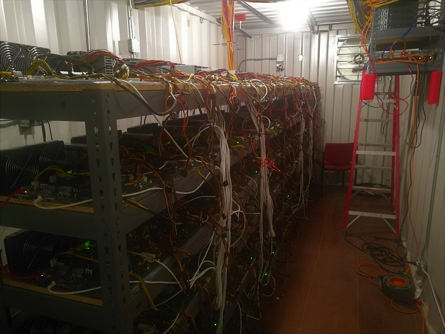
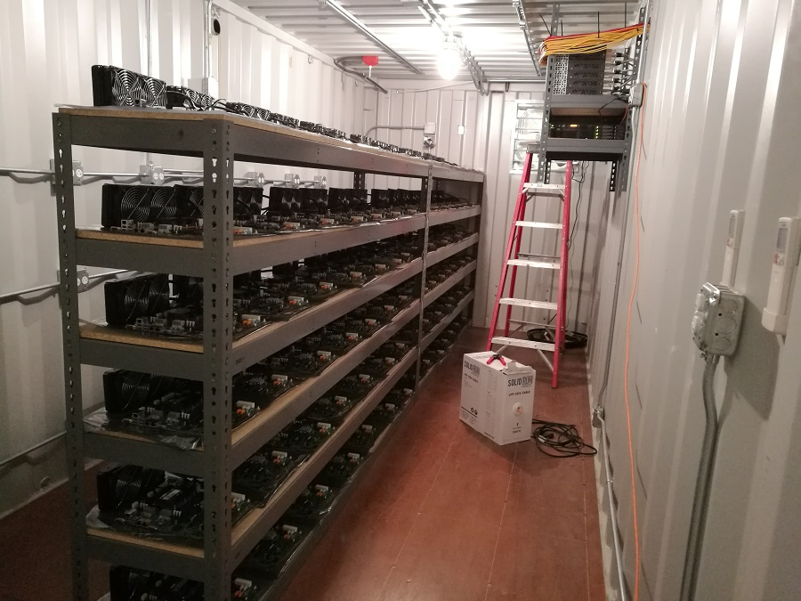
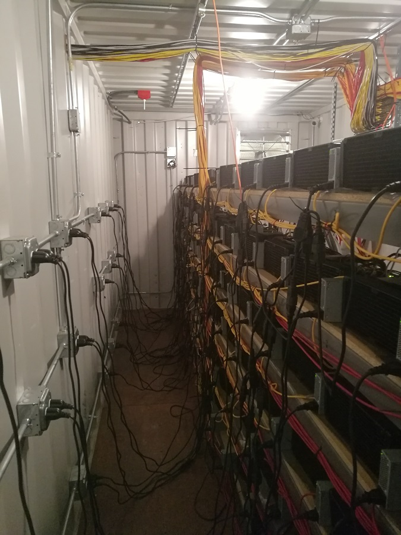

Semiconductor engineer: CMP process control · San Francisco
Computer enjoyer, art doer, hobby haver.
Background in materials science and CS.
Sometimes I get bored and do crazy things.
Project · 2018
You are looking at a supercomputer, more or less. With the exception of some donated manual labor (for which I am eternally grateful), I built it entirely on my own back in 2018 as a side project. Intel had just abruptly discontinued the Xeon Phi Knights Landing product line, which left computer manufacturers with an unfortunate stockpile of hardware they could not sell through the usual channels. I knew just the right people to get my hands on a lot of that hardware for cheap.

Front aisle — Xeon Phi nodes mounted and cabled
The thermal load was staggering, but water-cooling gave me flexibility. Each of the four shipping containers — fireproof, with suppression — had a cold intake aisle and a hot exhaust aisle, with air pulled through radiators mounted on the central rack. When fully assembled, the system included over 300 Xeon Phi 7210 nodes. Each node weighs in at a maximum 2,662 double-precision GigaFLOPS, for a grand total of nearly 1 PetaFLOP — enough to have ranked on the TOP500 list at the time it was built.

Hot exhaust aisle — cooling infrastructure and cable runs
Of course, I had no budget for fancy interconnect, let alone RAM for 300+ systems. The saving grace: these CPUs shipped with 16 GB of high-bandwidth memory on the package itself (the very same type that is now in shortage for AI), and could boot without any additional RAM installed. To avoid hard drives entirely, I netbooted them with a minimal container Linux distribution.
I settled on RancherOS and used Docker Swarm for orchestration, alongside custom bash/python tooling for scheduling, administration, and IPMI control, with Prometheus and Grafana for monitoring. Networking used a mix of SFP+ and QSFP+ optics.

Full build — one of four shipping containers
About
MS, Computer Science
Georgia Tech
MS, Materials Engineering
Cal Poly San Luis Obispo
Over a decade of experience with CMP and semiconductor process integration, with particular focus on real-time control, numerical optimization, and physics-based modeling
SF Bay Area, California
HPC, distributed systems, and occasionally building things that probably shouldn't exist.
Intellectual Property
14 total granted patents
Machine Vision as Input to Process Control
Invented a novel control loop using real-time computer vision analysis.
US Patent #20200094370
Synthetic Training Data Generation
Developed a method for generating synthetic spectral data to train ML models in data-scarce environments.
US Patent #20200005139
Resume
Senior Algorithm Engineer — real-time control, numerical optimization, and physics-based modeling.
Download Resume (PDF)Contact
Open to interesting conversations about software, infrastructure, and anything compute-adjacent.